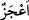
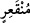

koparıyordu. Rivâyete göre, Âd kavmi rüzgardan korunmak için kuytu vâdilere, dağ
geçitlerine ve çukurlara sığındılar, birbirlerine tutundular. Ama kasırga durumundaki
rüzgar onları bulundukları yerden söküp çıkarıyor ve cansız yere seriyordu.
Mukâtil, “onların ruhlarını cesedlerinden alıyordu” demiştir. Süheylî de, “bu kasırga
mağara ve yer altındaki ev ve sığınaklarda bulunanlardan kimse kurtulmasın diye yedi
gece ve sekiz gün sürdü. Açıkta ve görünürde olanları yok etti. Evlerinde sığınmış
olanları da söküp çıkardı veya evlerini başlarına yıkarak mağaralarda, yer altındaki
sığınaklarda bulunanları da açlık ve susuzluktan mahvetti” demiştir. Bu sebeple, Allah
“şimdi onlardan arda kalan bir şey görüyor musun?” (Hakka, 69/8) buyurmuştur.
Yâni, sekiz gün boyunca esen bu kasırgadan sonra onlardan geriye bir şeyin kalması
mümkün mü?
“Sanki köklerinden sökülmüş hurma kütükleri gibi.” “
/A’câz” kelimesi kök
anlamındaki “acûz” kelimesinin çoğuludur. “
/Münkair” kelimesi de, “kökünden
kesilmiş” anlamındadır. Yüce Allah bu âyet-i kerîmede şunu belirtmeyi dilemiştir: Âd
kavmi, yerin derinliklerinde kök salan hurma ağacı nasıl köküyle yerden koparılırsa,
onlar da kendilerinden bir kalıntı veya bir iz kalmayacak şekilde koparıldılar.
Köklerinden koparılıp atıldılar, anlamınadır. Bazıları dediler ki, onlar dalları olmayan
hurma kütüklerine benzetildiler. Çünkü kasırga, onların kellelerini koparıp başsız
cesedler ve gövdeler hâlinde bırakıyordu. Diğer bazılarına göre ise kasırga, Âd
kavmini yerlerinden koparıp tepelerinin üstüne yere vurmuş, boyunları üstüne dikerek,
başlarını gövdelerinden ayırmıştır. Âyet-i kerîme’de, onların ne kadar güçlü ve yer
yüzüne ne kadar sımsıkı sarıldıklarına işâret edilmektedir. Onlar gövdelerinin olanca
güçleriyle yere dayayıp geçirdikleri ayaklarını direyerek kasırgaya karşı koymaya
çalıştılar. Kasırga hâlindeki rüzgar onları yerlerinden koparıp atınca, onlar köklerinden
sökülmüş hurma kütükleri gibi koparılıp atıldılar.
Ebu’l-Leys demiştir ki, rüzgar onları alıp yerden koparılmış hurma kütükleri gibi
yüzüstü yere çarptı. Boyları uzun olduğu için Allah onları devrilmiş hurma ağacına
benzetmiştir.
Mukâtil, onlardan her birinin boyunun on iki arşın olduğunu söylemiştir. Kelbî’den
yapılan rivâyette ise, onlardan her birinin uzunluğu yetmiş arşın idi. Hûd (a.s.) onlara
felaket getirecek rüzgarı anlatınca, alaya aldılar ve açık bir alana çıkarak, ayaklarını
dizlerinin altına kadar toprağa gömdüler. Sonra, “rüzgara söyle, gelip bizi buradan
kaldırıp atsın bakalım” dediler. Kasırga gelip yerin dibine kadar girerek onların hepsini
ikişer ikişer havaya kaldırdıktan sonra birbirine vurarak yere attı. Kalanlar aynı âkibete
uğrayıncaya kadar havada uçuşup birbiri ile çarpışan arkadaşlarına dehşet içinde
bakakaldılar. Rüzgar, hepsini havaya kaldırıp birbirine çarparak yere çalıp işlerini
bitirince üzerlerine toprak ve kum yığdı. Artık bir müddet toprak altından iniltiler
duyulmakta idi.